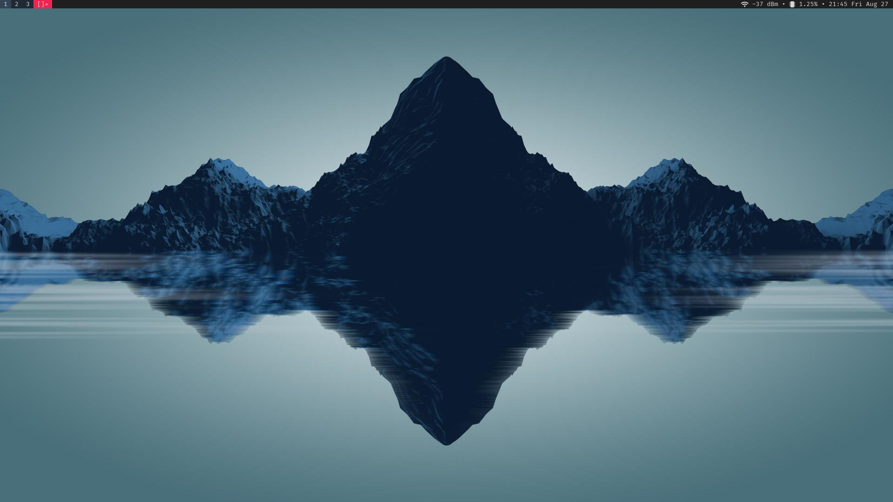
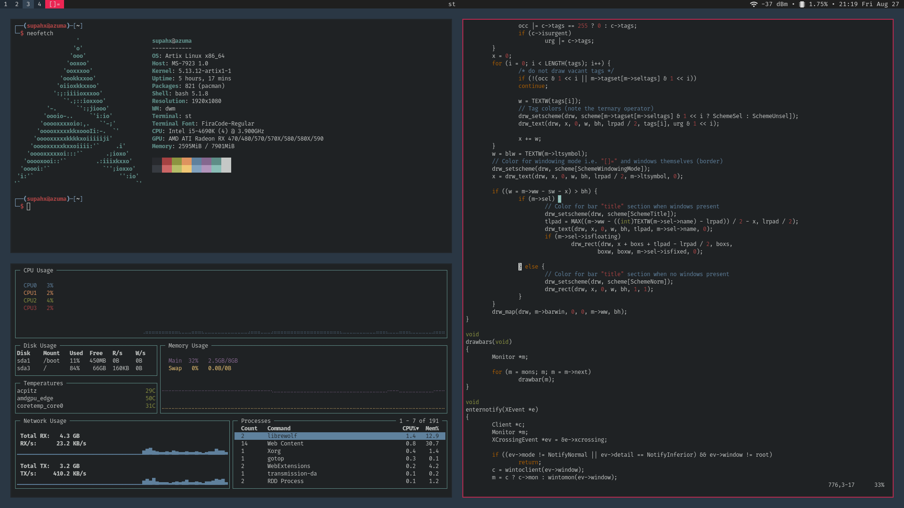

Josue Quintero / Dotfiles
This is sort of a website to my github repo much like a README.md.
Patches and Features (dwm)
- scratchpad: accessible with
super+`
- attatchbottom: new clients are attatched at the bottom of the stack instead of the top
(this should be the default behavior)
- shiftstack: move windows up and down stack manually
super+shift+(j/k)
- full gaps: dynamic gaps using
super+(-/=)
- and a few more aesthetic changes
- set status using
dwm -s "$STATUS"
- alpha bar
- centertitle
- hide vacant tags
Installation
Make sure to have the right dependencies installed!
git clone https://github.com/SupahXYT/dots
cd dots/dwm
sudo make install
Do the same for st and dmenu.
Screenshots


Manditory Form
1. Are you familiar with tiling window managers at all?